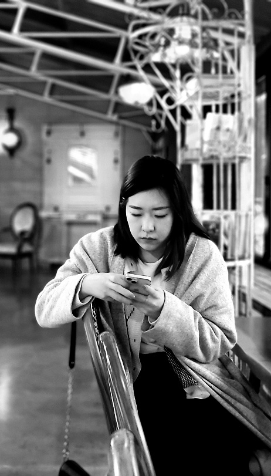
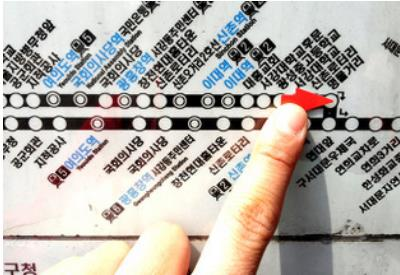
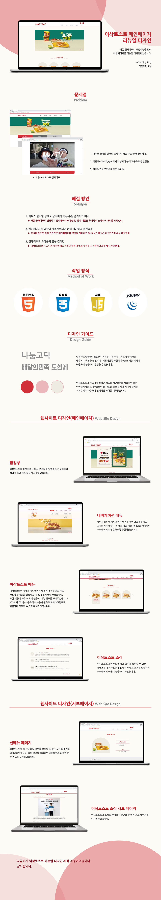

- Name 김진란
- Birth 1989. 02. 17
- Addrress 서울시 양천구 목동
- Phone 010 2652 9861
- Email jinran89@naver.com
로딩중
심플하면서도 포인트가 잘 드러나는 디자인을 추구하고 있는
웹퍼블리셔 김진란입니다.
물감처럼 잘 섞일 수 있고 다양한 색을 낼 수 있는 디자이너입니다:)
스크롤바를 내리면 작품을 감상할 수 있습니다.
어렸을 때부터 미술을 해왔고,
편집디자인 경력을 가지고 있어 디자인 분야에 있어서는 남들과는 다른 출발점을 가지고
있다고 생각합니다.
또한 다룰 수 있는 프로그램이 많고 디자인 경험이 많아 보다 나은 디자인 결과물울 낼 수 있습니다.
현실에 안주하지 않고 계속 발전해나가는 디자이너가 되겠습니다.
심플하지만 포인트를 잘 잡아내는 디자인을 추구하고 있으며, 그러한 디자인 결과물을 선보일 수 있도록 노력하고 있습니다.
처음 보는 사람들과도 원활한 의사소통이 가능해 팀 프로젝트에도 잘 적응할 수 있는 것은 저의 장점 중 하나입니다.
또한 꼼꼼함과 성실한 성격을 가지고 있어
어떤 클라이언트를 만나도 요구사항을 놓치지 않고 디자인에 적용할 수 있으며 데드라인을
잘 지킬 수 있습니다.
따듯함을 간직하고 있는 친구입니다. 항상 배려가 습관화 되어있고 배울 점도많고 나에게 의지가 되는 친구입니다. 웃는 모습에 나까지 같이 웃음 짓게 되는 친구입니다.
창의적인 생각과 가지고 있는 실력을 바탕으로 탁월한 능력을 뽐내며 배려가 습관화 되어있어 어떤 이야기를 해도 따뜻하게 포용해주고 상대의 자신감을 높여주는 든든한 사람!
배려가 자연스러운 친구, 그러면서도 자신만의 단단함이 잘 자리잡고 있어 따뜻하고 든든한 친구가 되어줍니다. 잘 쌓아온 단단함으로 주변 사람들에게 신뢰감을 주고, 자신이 해내고자 하는 것을 실천할 줄 아는 사람이라고 생각합니다.
사용자의 Context와 Needs를 파악하고
Problem을 해결할 수 있는 Insight 도출
시멘틱을 지향하는 HTML/CSS 작성능력 보유,
자바스크립트와 제이쿼리 기반의 로직 구현 가능
SCSS를 이용한
CSS 스타일링을 원활이 사용할 수 있습니다.
국내 프론트엔드 시장의 대세 리액트 코드구현,
자바스크립트와 제이쿼리 기반의 로직구현 가능
심플하면서도 포인트가 잘 드러나는 디자인 스타일을 추구하고 있습니다.
HTML5 & CSS3 시멘틱 페이지를 ZenCoding(EMMET)으로 코딩할 수 있습니다.
처음 보는 사람들과도 원활한 의사소통이 가능해
팀 프로젝트에도 잘 적응할 수 있는 것은저의 장점 중 하나입니다.
또한 꼼꼼함과 성실한 성격을 가지고 있어
어떤 클라이언트를 만나도 요구사항을 놓치지 않고 디자인에 적용할 수 있으며
데드라인을 잘 지킬 수 있습니다.
새로운 코딩기법과 디자인을 배우는 것이 정말 즐겁습니다.

UX의 정의에 대해서 알아보고 다양한 UX의 사례들을 보면서
UX란 편리함, 심플함으로 삶의 질을 높이는 것이라고 생각했다.
기술 등의 발전으로 우리의 삶은 좀 더 편리해졌다.
하지만 그렇다고 우리의 삶의 질이 높아졌다고 말 할 수 있을까?
예를 들어 좋은 제품을 만들었지만 고객이 사용하기 불편하다면 그 고객은 제품을
사용하지 않게 될 것이고,
그 고객의 삶의 질이 높아졌다고 말할 수 없다.
제품, 서비스 등을 사용함에 있어 편리하고 간단하게 이용할 수 있어야 우리의 삶은
높아진다.
UX은 편리함과 심플함으로 우리 삶을 질을 높힐 수 있게 하는 것이다.

사용자 경험에 대한 정의, 다양한 UX의 사례, 내가 생각하는 User Experience 토스, 카카오뱅크, 버스노선도
일상생활에서 발견한 "디자인과 UX(사용자경험)의 차이" 사례 디자인 의도와 일치하지 않는 사용자 경험

정보구조설계(IA), 경험맵 등을 작성할 때 의사결정의 준거점으로 활용하는 페르소나 Motive, Pain Point, Needs
CJ Newsroom Renewal Design
기존 웹사이트의 개선사항을 찾아 메인페이지를 리뉴얼 디자인하였습니다.
CJ의 컬러 아이덴티티를 사용하여 브랜드 이미지를 강조하였으며,
간결한 레이아웃으로 전달하고자 하는 내용을 보기 쉽게 배치하였습니다.
작업프로그램 : Visual Studio Code
작업기여도 : 100% 개인 작업


EDIYA COFFEE Renewal Design
기존 웹사이트의 개선사항을 찾아 메인페이지를 리뉴얼 디자인하였습니다.
이디야의 컬러 아이덴티티를 사용하여 브랜드 이미지를 강조하였으며,
간결한 레이아웃으로 전달하고자 하는 내용을 보기 쉽게 배치하였습니다.
작업프로그램 : Figma, Visual Studio Code
작업기여도 : 100% 개인 작업

Save Earth Site Design
그룹작업으로써 환경오염과 텀블러라는 주제를 가지고
사이트를 제작하였습니다.
지구와 관련된 디자인과 컬러를 적용해 아이덴티리를 주었습니다.
작업프로그램 : Figma, Visual Studio Code
작업기여도 : 그룹 작업(40% 개인 작업)


저의 웹퍼블리싱 이야기입니다.
질문을 선택하시면 정리된 답변을 보실 수 있습니다.
더욱 궁금하신 점은 면접 시 말씀드리겠습니다. 감사합니다~!
본 페이지는 저의 개인 포트폴리오용으로 제작되었으며, 상업적인 목적과 관련이 없음을
알려드립니다.